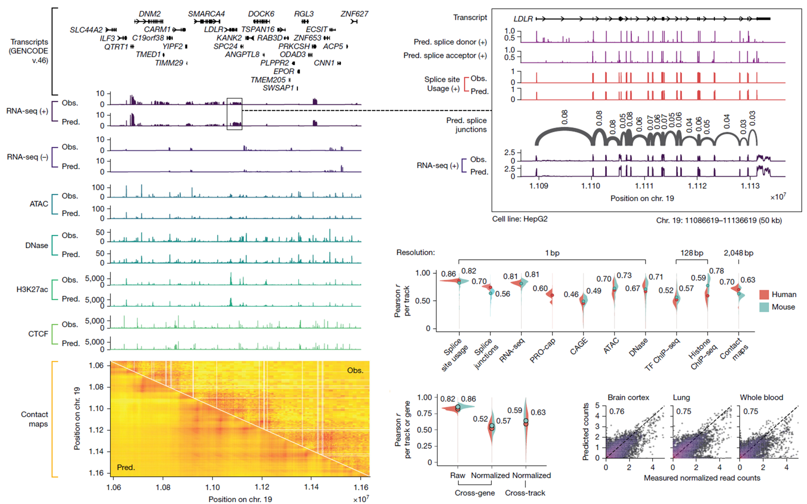
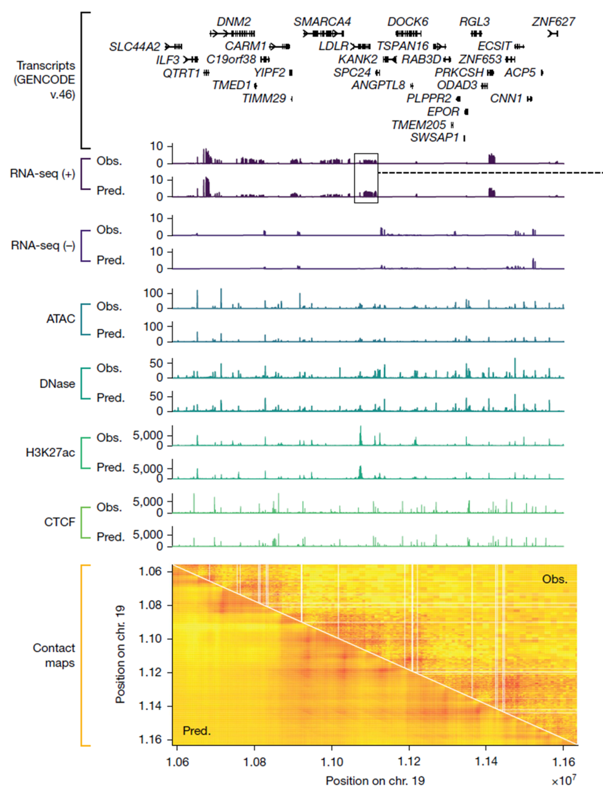
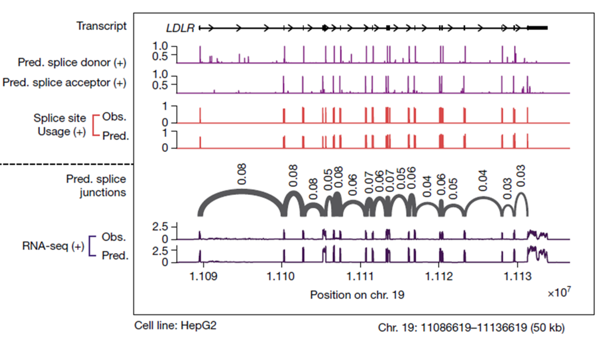
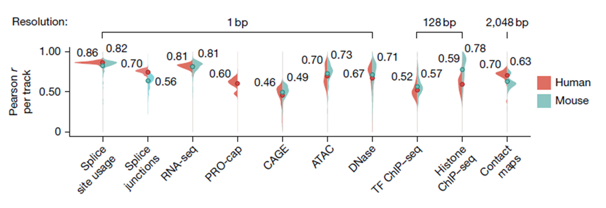
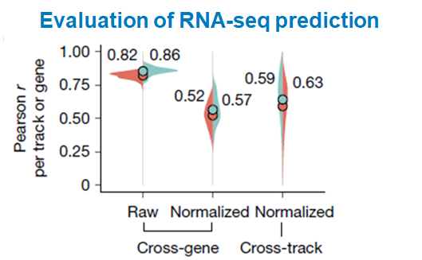
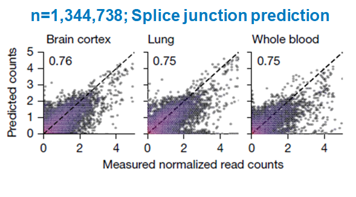

Figure 2. Qualitative and quantitative prediction examples¶

Figure 2는 AlphaGenome이 단순히 거친 발현 패턴만 맞추는 것이 아니라, RNA-seq, splice site usage, splice junction, accessibility, contact map 같은 정교한 readout까지 얼마나 잘 예측하는지를 정성적·정량적으로 보여주는 figure입니다.
Panel A — 1 Mb 구간에서의 multi-modal track prediction (Qualitative Verification)¶

입력: DNA (Reference Genome chr19. 10,587,331–11,635,907) + Organism index (Human=9606, Mouse=10090 중 Human index 적용) 출력: 해당 DNA 서열을 바탕으로 모델이 예측한 HepG2 cell line의 다양한 functional genomics modality
Source code explanation: Organism index information
enum Organism { // Unspecified organism. ORGANISM_UNSPECIFIED = 0;
// Human (Homo sapiens). ORGANISM_HOMO_SAPIENS = 9606;
// Mouse (Mus musculus). ORGANISM_MUS_MUSCULUS = 10090; }
패널 A에서는 human reference genome의 chr19 중 학습에서 제외된(held-out) 1 Mb 구간을 예시로 사용해, AplhaGenome이 HepG2 맥락에서 여러 genome track을 얼마나 잘 재현하는지를 보여줍니다. 여기서 chr19는 x축의 reference-genome DNA (좌표계)를 뜻하고, HepG2 (간암 Cell line)는 어떤 세포 맥락의 실험 신호를 예측할 것인지를 뜻합니다. 맨 위의 GENCODE transcript annotation은 이 구간에 어떤 유전자와 transcript가 존재하는지를 보여주는 기준선 역할을 합니다. 따라서 아래 RNA-seq peak가 단순한 잡음이 아니라, 실제로 알려진 gene structure와 어느 정도 맞물려 나타나는지를 함께 볼 수 있습니다. 저자들은 이 locus를 통해 (1) 넓은 범위의 멀티모달 track concordance와 (2) 유전자 수준의 정밀한 RNA/splicing 예시를 한 번에 보여주려 하였습니다.
각 트랙은 위의 observed (Obs.)와 아래의 predicted (pred.)로 나뉘어 있습니다. observed는 실제 HepG2 실험에서 얻어진 신호이고, predicted는 AlphaGenome이 같은 1-Mb DNA 서열로부터 예측한 신호입니다. 육안으로 봐도 peak의 위치뿐 아니라 exon coverage, accessibility peak, broad histone signal, contact pattern의 큰 구조까지 실제와 유사하게 재현됩니다. 즉, AlphaGenome은 한 가지 assay만 대략 맞추는 모델이 아니라, 같은 DNA 문맥에서 여러 modality의 readout을 동시에 일관되게 복원하는 모델이라는 점을 이 패널이 먼저 보여줍니다. 이 패널에서 중요한 것은 각 assay의 절대 높이를 서로 비교하는 것이 아니라, 같은 assay 안에서 observed와 predicted의 모양이 얼마나 비슷한지를 보는 것입니다. 즉, RNA-seq과 H3K27ac의 y축 크기를 서로 비교하는 것이 아니라, RNA-seq observed vs predicted, H3K27ac observed vs predicted처럼 같은 modality 내부에서 peak 위치, signal shape, broadness, background pattern이 얼마나 잘 맞는지를 보는 것이 핵심입니다.
RNA-seq이 +와 − strand로 나뉘어 있는 점도 중요합니다. 즉, 모델은 단순히 “이 위치에 전사 신호가 있다”만 맞추는 것이 아니라, 어느 strand 방향에서 transcription이 발생하는지까지 구분해서 예측하고 있습니다.
맨 아래의 contact map은 1차원 track과 달리, 게놈 상 두 위치가 3차원적으로 얼마나 자주 접촉하는지를 나타내는 2차원 행렬입니다. 따라서 여기서는 특정 한 지점의 높이보다, 대각선을 따라 나타나는 domain-like pattern, block 구조, 그리고 장거리 상호작용의 상대적 강도 분포가 observed와 predicted 사이에서 얼마나 유사하게 재현되는지가 더 중요합니다. 또 하나 눈에 띄는 점은, 모델 예측을 보여주는 아래쪽 삼각형 영역이 다소 blur된 것처럼 보인다는 점입니다. 이는 정답 데이터가 single-base 수준의 라벨을 갖는 반면, 본문에 제시된 contact map은 2,048 bp 해상도로 표현되기 때문입니다. 또한 계산 과정에서는 이전 연구인 Orca와의 비교 기준을 맞추기 위해 먼저 4,000 bp 해상도로 출력한 뒤, 이를 다시 2,048 bp로 rescaling하는 절차가 사용됩니다.
Supplementary explanation: how chr19 and HepG2 should be interpreted
여기서 chr19는 HepG2의 실제 핵형을 그대로 뜻하는 것이 아니라, human reference genome의 chr19 좌표계를 의미합니다. 따라서 Figure 2a의 x축은 세포주의 실제 염색체 상태를 직접 그린 것이 아니라, reference genome 위에서 비교 가능한 공통 좌표계라고 이해하는 것이 맞습니다.
한편 HepG2는 실제로 aneuploid한 cancer cell line이기 때문에, 일부 구간에서는 copy-number alteration이나 structural rearrangement 같은 영향이 있을 수 있습니다. 그럼에도 불구하고 RNA-seq, ATAC-seq, DNase-seq, ChIP-seq 같은 실험 데이터는 보통 reference genome에 정렬된 genome track 형태로 분석되고 시각화되므로, Figure 2처럼 reference chr19 위에서 observed와 predicted를 비교하는 것 자체는 충분히 가능합니다.
따라서 이 패널은 “완전히 정상적인 diploid genome”만을 가정한 예시라기보다, 실제 cell-line context에서도 모델이 여러 modality의 신호를 얼마나 안정적으로 재현하는지를 보여주는 qualitative example로 이해하면 됩니다.
Panel B — 50 kb 확대: LDLR 주변 splice-related readout¶
용어 정리
readout: 모델이 최종적으로 예측해 내는 관측 대상 신호를 뜻합니다. RNA-seq coverage, splice site usage, splice junction score, accessibility, contact map 등이 모두 서로 다른 readout입니다.
donor: intron이 시작되는 5' splice site를 가리킵니다. 보통 upstream exon의 끝과 intron의 시작 경계에 해당하며, canonical motif로는 GT가 대표적입니다.
acceptor: intron이 끝나는 3' splice site를 가리킵니다. 보통 intron의 끝과 downstream exon의 시작 경계에 해당하며, canonical motif로는 AG가 대표적입니다.
splice site usage: 특정 donor 또는 acceptor site가 실제 전사체 생성 과정에서 얼마나 자주, 얼마나 강하게 사용되는지를 나타내는 정량적 신호입니다. 단순히 site의 존재 여부보다 활용 강도에 더 가깝습니다.
splice junction: 하나의 donor와 하나의 acceptor가 실제로 연결되어 형성되는 exon-exon junction을 뜻합니다. 즉, 개별 경계 위치가 아니라 어떤 exon 조합이 실제로 이어지는지를 보여주는 readout입니다.
핵심 차이: splice site usage는 “이 site가 전체적으로 얼마나 자주 쓰이느냐”를 보는 값이고, splice junction은 “그 site가 실제로 어느 상대 site와 연결되느냐”까지 풀어서 보는 값입니다. 즉, usage는 연결 상대를 구분하지 않은 총사용량이고, junction은 그 총사용량을 donor-acceptor 조합별로 분해한 값입니다.

패널 B에서는 패널 A에서 보았던 넓은 1 Mb 구간 중, LDLR 유전자 주변 약 50 kb 영역만 따로 확대해서 보여줍니다. 즉, 패널 A가 “멀리서 봤을 때 여러 modality가 전반적으로 잘 맞는다”는 것을 보여줬다면, panel B는 그중에서도 특히 splicing과 관련된 readout이 얼마나 정밀하게 맞는지를 가까이에서 확인하는 패널이라고 보면 됩니다.
이 그림을 읽을 때는 먼저 맨 위의 transcript annotation을 보는 것이 좋습니다. 여기서 검은색 네모 박스는 exon, 그 사이를 잇는 가는 선은 intron을 포함한 transcript의 연결 구조를 나타냅니다. 즉, 이 맨 위 줄은 LDLR 유전자가 이 구간에서 어떤 exon들로 이루어져 있는지를 먼저 보여주는 일종의 기준선입니다. 또 화살표가 오른쪽 방향으로 나아가고 있다는 점도 중요합니다. 이것은 LDLR가 이 구간에서 plus strand 방향으로 전사되는 유전자라는 뜻입니다. 즉, 전사가 왼쪽에서 오른쪽으로 진행된다고 이해하면 되고, 아래에 표시된 predicted splice donor (+), predicted splice acceptor (+), splice site usage (+), RNA-seq (+) 역시 모두 바로 이 plus strand 기준에서 해석해야 합니다.
가장 위의 두 줄은 predicted splice donor (+) 와 predicted splice acceptor (+) 입니다. 여기서는 모델이 “어느 위치가 donor site일 것 같은지”, “어느 위치가 acceptor site일 것 같은지”를 염기 단위에 가깝게 예측한 결과를 보여줍니다. 실제로 그림을 보면 보라색 spike들이 transcript 구조에서 보이는 엑손 경계 근처 (Transcript의 네모 박스)에 반복적으로 나타납니다. 즉, 모델이 단순히 “이 유전자가 발현된다” 정도만 아는 것이 아니라, 어디서 intron이 잘리고 exon이 이어져야 하는지에 해당하는 경계 정보까지 비교적 정확하게 포착하고 있다는 뜻입니다.
그 아래의 splice site usage (+) 는 donor/acceptor보다 한 단계 더 정량적인 정보입니다. donor/acceptor prediction이 “이 위치가 splice site인가 아닌가”에 가까운 신호라면, splice site usage는 그 splice site가 실제로 얼마나 강하게, 얼마나 자주 사용되는지를 나타냅니다. 여기서는 observed와 predicted가 나란히 들어 있기 때문에, 단순히 위치만 비슷한 것이 아니라 각 site의 상대적인 강도까지도 얼마나 비슷한지를 직접 비교할 수 있습니다. 그림을 보면 큰 peak가 서는 위치와 작은 peak가 서는 위치의 전반적인 패턴이 실제값과 꽤 유사하게 맞아 있습니다.
그 다음 줄의 predicted splice junctions는 본 논문에서 가장 중요한 부분 중 하나입니다. 여기서는 더 이상 개별 splice site 하나만 보는 것이 아니라, 어떤 donor와 어떤 acceptor가 실제로 서로 연결될 것인가를 junction 수준에서 예측합니다. 그림 속 회색 arc 하나하나는 하나의 exon–exon 연결 후보를 의미하고, 위에 적힌 숫자는 그 연결의 예측된 사용 강도 또는 비중을 나타내는 값으로 이해하면 됩니다. 즉, 모델은 “여기가 splice donor다”, “여기가 splice acceptor다”에서 멈추는 것이 아니라, 실제로 어떤 조합으로 이어져 mature transcript가 만들어질지까지 구조적으로 예측하고 있는 것입니다. 물론 이 패널에서는 junction에 대한 observed arc가 함께 제시되어 있지 않기 때문에, 각 연결을 정답과 1:1로 직접 비교하기는 어렵습니다. 따라서 여기서는 “이 arc 하나가 정확하다”를 단정적으로 읽기보다는, 예측된 junction pattern이 위쪽의 donor/acceptor 및 splice site usage 신호와 서로 정합적인지, 그리고 아래의 RNA-seq coverage pattern과도 모순되지 않는지를 정도로만 참고하시면 될 것 같습니다.
맨 아래의 RNA-seq (+) observed/predicted는 이런 splice-related prediction이 실제 전사 readout과도 서로 일관적인지를 확인하는 기준선 역할을 합니다. 즉, 위쪽에서 donor/acceptor와 junction이 예측한 구조가, 아래 RNA coverage에서도 엑손이 있는 위치에 신호가 서고 intron에서는 상대적으로 신호가 낮아지는 형태와 잘 맞아야 자연스럽습니다. 이 패널에서는 실제로 predicted RNA-seq coverage가 observed와 상당히 유사하게 나타나므로, 모델의 splice-related prediction이 RNA-level coverage 패턴과도 서로 모순되지 않음을 보여줍니다.
정리하면, panel B는 AlphaGenome이 단순히 “LDLR가 발현된다”는 사실만 맞추는 것이 아니라,
1. 어디가 splice donor/acceptor인지,
2. 그 site가 얼마나 사용되는지,
3. 어떤 exon들이 서로 연결되는지,
4. 그리고 그 결과가 RNA-seq coverage와 어떻게 이어지는지까지
하나의 locus 안에서 꽤 일관되게 예측할 수 있음을 보여주는 패널입니다.
즉, 이 그림의 핵심은 expression 예측에서 한 걸음 더 나아가, transcript 구조 자체를 구성하는 splicing logic까지 모델이 포착하고 있다는 점입니다.
Panel C — modality별 track correlation 분포¶

패널 C는 panel A와 B에서 본 정성적 예시를 넘어, AlphaGenome의 예측이 전체 track 수준에서도 얼마나 안정적으로 맞는지를 정량적으로 요약한 그림입니다. 즉, “특정 locus 하나에서만 우연히 잘 맞은 것 아닌가?”라는 질문에 대해, 여러 modality와 많은 track 전반에서 observed와 predicted의 일치도를 계산해 보여주는 패널이라고 이해하면 됩니다.
여기서 y축의 Pearson correlation coefficient (r) 는 각 track에서 실제 신호와 예측 신호의 모양이 얼마나 비슷한지를 나타내는 지표입니다. 따라서 이 패널에서는 각 modality에서 predicted track이 observed track의 패턴을 얼마나 잘 재현했는지를 한눈에 비교할 수 있습니다.
What is Pearson correlation coefficient (r)?
Pearson correlation coefficient, 즉 피어슨 상관계수 r는
두 값의 패턴이 얼마나 비슷하게 움직이는지를 나타내는 대표적인 지표입니다.
여기서는 각 track에서 observed signal과 predicted signal을 비교해
그 모양이 얼마나 유사한지를 수치로 요약한 값이라고 보면 됩니다.
일반적으로 r = 1에 가까울수록 예측과 실제가 매우 유사하다는 뜻이고,
r = 0에 가까울수록 선형적인 일치가 거의 없다는 뜻입니다.
따라서 panel C에서는 각 modality에서
predicted track이 observed track의 전반적인 패턴을 얼마나 잘 재현했는가를
이 값으로 평가하고 있습니다.
이 그림에서 사용된 바이올린 플롯(violin plot) 그리고 각 plot의 색깔은 human(빨강) 과 mouse(청록) 를 구분합니다. 따라서 각 modality마다 사람과 마우스에서의 성능 분포를 나란히 비교할 수 있습니다.
대체로 두 종 모두에서 높은 상관을 보이지만, 모달리티에 따라 분포의 중심과 퍼짐 정도는 조금씩 다릅니다. 즉, AlphaGenome은 특정 assay 하나에만 강한 모델이 아니라, 여러 종과 여러 readout에 걸쳐 비교적 일관된 성능을 보인다고 해석할 수 있습니다.
How to read a violin plot
바이올린 플롯은 평균값이나 중앙값 하나만 보여주는 것이 아니라,
값들의 전체 분포를 함께 보여주는 시각화 방식입니다.
이 figure에서는 한 modality 안에 포함된 많은 track들에 대해 계산한
Pearson r 값들이 어느 구간에 많이 몰려 있는지를 바이올린 모양으로 나타냅니다.
해석할 때는 보통 다음처럼 보면 됩니다.
- 세로로 길게 퍼져 있으면: 같은 modality 안에서도 성능 편차가 크다는 뜻
- 가로 폭이 두꺼운 부분이 있으면: 그 근처의 r 값을 가진 track이 많다는 뜻
- 전체적으로 위쪽에 몰려 있으면: 많은 track에서 성능이 전반적으로 높다는 뜻
즉, 바이올린 플롯은 “대표값이 얼마인가”만 보는 그림이 아니라,
성능이 얼마나 일관적인지, 분포가 얼마나 넓게 퍼져 있는지까지 함께 읽게 해 주는 그림입니다.
위쪽에 적힌 1 bp, 128 bp, 2,048 bp 는 각 modality가 예측되는 출력 해상도(resolution) 를 뜻합니다. 예를 들어 splice site usage, splice junctions, RNA-seq, PRO-cap, CAGE, ATAC 같은 readout은
보다 세밀한 1 bp 해상도에서 평가되고, TF ChIP-seq, histone ChIP-seq 은 128 bp, contact map 은 더 거친 2,048 bp 해상도에서 평가됩니다.
이 패널에서 특히 중요한 점은, 보다 구조적으로 어려운 readout인 splice junctions 나 contact maps 에서도 의미 있는 수준의 상관이 유지된다는 것입니다. 즉, AlphaGenome은 단순히 broad한 expression pattern만 맞추는 모델이 아니라, base-level splicing readout부터 3D chromatin contact structure까지 여러 수준의 정보를 꽤 폭넓게 복원하고 있음을 보여줍니다.
정리하면, panel C의 핵심은 AlphaGenome의 성능이 몇 개의 예시 locus에만 국한된 것이 아니라, human과 mouse의 다양한 modality 전반에서 track-level correlation 분포로 보아도 전반적으로 안정적이고 설득력 있게 유지된다는 점입니다.
Panel D — RNA-seq prediction의 정량 평가¶

패널 D는 AlphaGenome의 RNA-seq 예측 성능을 조금 더 엄밀하게 나누어 평가한 그림입니다. 여기서 핵심은 단순히 “RNA-seq coverage 모양이 비슷해 보인다”를 넘어서, 유전자 발현량의 크기 자체를 잘 맞추는지, 그리고 세포 유형별로 달라지는 상대적 발현 패턴까지 잘 맞추는지를 구분해서 본다는 점입니다.
이 그림의 y축은 Pearson correlation coefficient (r) 입니다.
패널 D는 크게 세 가지 평가로 나뉩니다.
-
첫 번째 바이올린은 raw expression을 이용한 cross-gene 평가입니다. 여기서 cross-gene이란, 하나의 RNA-seq track 안에서 여러 유전자들 사이의 발현량 차이를 비교하는 평가라고 이해하면 됩니다.
즉 질문은 이런 것입니다. -
어떤 유전자는 원래 많이 발현되고
- 어떤 유전자는 거의 발현되지 않는데
- 모델이 이런 유전자 간 상대적 발현 수준의 차이를 잘 재현하는가?
이 경우 상관계수는 human 0.82, mouse 0.86으로 가장 높습니다. 이 값이 높은 이유는, raw expression에서는 원래부터 강하게 발현되는 유전자와 약하게 발현되는 유전자 사이의 기본적인 dynamic range가 크게 반영되기 때문입니다. 즉, 모델이 “어떤 유전자가 대체로 많이 나오고 어떤 유전자가 낮게 나오는가”를 잘 맞추면 높은 상관을 얻기 비교적 쉽습니다.
다르게 말하면, 이 평가는 모델이 전반적인 expression landscape를 잘 잡는지를 보는 데는 좋지만, 세포 타입 특이적인 미세한 차이만을 보는 평가는 아닙니다.
2) Quantile-normalized expression, cross-gene¶
두 번째 바이올린은 quantile-normalized expression을 이용한 cross-gene 평가입니다. 여기서 normalization을 하는 이유는, raw expression에서 크게 작용하던 “원래 이 유전자는 어디서나 높은 편이다” 또는 “이 유전자는 원래 거의 안 나온다” 같은 baseline effect를 줄이기 위해서입니다.
즉, normalization 이후의 질문은 단순한 절대 발현량보다 조금 더 까다롭습니다.
- 이 유전자가 다른 유전자들에 비해 상대적으로 얼마나 높은가?
- 원래 많이 나오는 유전자라는 사실을 어느 정도 제거한 뒤에도
- 모델이 그 차이를 잘 맞추는가?
그래서 이 경우 상관계수는 human 0.52, mouse 0.57로 raw expression보다 내려갑니다. 이건 모델이 못한다는 뜻이라기보다, 이 평가가 더 어려운 문제라는 뜻에 가깝습니다. 즉, 단순한 abundance ranking을 넘어서 보다 정제된 expression pattern 자체를 맞춰야 하기 때문입니다.
3) Quantile-normalized expression, cross-track¶
세 번째 바이올린은 quantile-normalized expression의 cross-track 평가입니다. 여기서 cross-track은 하나의 유전자에 대해 여러 RNA-seq track, 즉 여러 세포 유형이나 biosample에 걸쳐 그 유전자의 발현이 어떻게 달라지는지를 비교하는 평가라고 이해하면 됩니다.
즉 질문은 이제 이렇게 바뀝니다.
- 이 유전자가 어떤 세포 타입에서는 높고
- 다른 세포 타입에서는 낮은데
- 모델이 이런 cell-type-specific expression profile을 잘 재현하는가?
이 평가는 실제로 매우 중요합니다. 왜냐하면 sequence-to-function 모델이 진짜 유용하려면 단순히 “이 유전자는 대체로 많이 발현된다”를 아는 것만으로는 부족하고, 어떤 세포 맥락에서 특히 올라가거나 내려가는지까지 맞춰야 하기 때문입니다.
이 경우 상관계수는 human 0.59, mouse 0.63입니다. 흥미로운 점은 normalized cross-gene보다 약간 높다는 점인데, 이는 모델이 단순한 gene-ranking만 보는 것보다 같은 유전자가 여러 track에서 어떻게 달라지는지라는 패턴도 비교적 잘 포착하고 있음을 시사합니다.
이 패널의 핵심 해석¶
패널 D의 핵심은 숫자 하나가 아니라,
무엇을 제거하고 무엇을 남긴 상태에서 평가하느냐에 따라 성능 해석이 달라진다는 점입니다.
- Raw cross-gene 성능이 높다는 것은
모델이 전반적인 RNA abundance landscape를 잘 잡는다는 뜻입니다. - Normalized cross-gene 성능이 더 낮다는 것은
baseline expression을 제거한 뒤의 세밀한 차이를 맞추는 것이 훨씬 더 어렵다는 뜻입니다. - Normalized cross-track에서 의미 있는 상관이 유지된다는 것은
AlphaGenome이 단순한 평균 발현량 예측을 넘어,
cell-type-specific expression variation까지 어느 정도 포착하고 있음을 보여줍니다.
즉, 패널 D는 AlphaGenome이 RNA-seq을 단순히 “대충 비슷하게” 예측하는 것이 아니라, 절대 발현량, 정규화된 상대 발현 패턴, 세포 유형별 변화 양상을 구분해서 보더라도 상당히 설득력 있는 성능을 낸다는 점을 보여주는 패널입니다.
Panel E — splice junction prediction의 정량 평가¶

패널 E는 splice junction readout에 대한 정량 평가를 보여줍니다. 즉, 패널 B에서 정성적으로 보였던 junction-level prediction이 대규모 데이터 전반에서도 얼마나 유지되는지를 숫자와 산포도로 요약한 패널입니다.
여기서 핵심은 AlphaGenome이 단순히 RNA-seq coverage만 비슷하게 맞추는 모델이 아니라, 어떤 donor와 어떤 acceptor가 실제로 연결되는지에 해당하는 보다 어려운 junction-level quantitative signal까지 예측 대상으로 삼고 있다는 점입니다.
각 산점도에서 x축은 measured normalized read counts (splice junction), y축은 predicted counts를 나타냅니다. 따라서 각 점은 하나의 splice junction에 대한 실제값과 예측값의 대응 관계를 의미합니다. 점들이 대각선 점선 근처에 많이 모일수록, 모델의 예측이 실제 측정값과 잘 일치한다는 뜻입니다.
그림에는 brain cortex, lung, whole blood의 세 조직이 예시로 제시되어 있는데, 세 경우 모두 점들이 전반적으로 대각선 방향을 따라 분포하며, 각 패널의 상관계수도 0.76, 0.75, 0.75 수준으로 비교적 높게 나타납니다. 즉, 특정 조직 하나에서만 우연히 잘 맞는 것이 아니라, 서로 다른 조직 맥락에서도 normalized splice junction count를 안정적으로 예측하고 있음을 보여줍니다.
또 제목에 제시된 n=1,344,738은 이러한 junction prediction 평가가 매우 큰 규모에서 수행되었음을 의미합니다. 따라서 패널 E는 AlphaGenome이 단순한 expression level 예측을 넘어서, splicing connectivity의 정량적 크기까지도 대규모로 설득력 있게 복원할 수 있음을 보여주는 패널이라고 볼 수 있습니다.